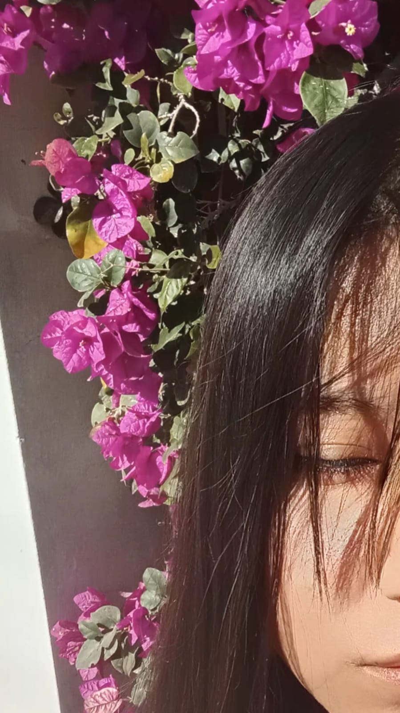

1.- Tus ojos y sonrisas hipnóticas. No sé que es lo q tienen, pero es un algo que hace querer verlos siempre; ver hasta el más mínimo detalle y darme cuenta que eres tú. (─‿‿─)♡
2.- Tu hermoso pelo lácio. Es increíble como una persona puede tener el pelo tan lindo y bien cuidado. Sobre todo siempre que es muy especial, no estoy tan seguro, pero se que lo es. (´｡• ᵕ •｡`) ♡
3.- Tus besitos hermosos. Siento que cada uno esta cargado de un amor y ternura genuina. Me siento extremadamente amado y mimado cuando me los das. ♡ (￣З￣)
4.- Tus cálidos abrazos. Se han convertido en el lugar al que quiero acudir siempre, en mis buenas y en mis malas. Estando ahí es como si nada más, que estar contigo, importara. Aún recuerdo uno de nuestros últimos abrazos en la alameda. o(TヘTo)
5.- Como eres cuando te emocionas. La forma en la que saltas, sonríes, hablas, te brillan los ojos cuando estas emocionada o como se te transforma la voz cuando hablas de algo que te gusta y apasiona es muy linda y tierna; algo único de ti, lo amo demasiado (/▽＼*)｡o○♡
6.- La forma en la que me hablas y preocupas por mí. Es una forma muy especial, en cada charla me siento muy querido por ti; cada vez que preguntas "como estoy?", "que has comido?", y en general te interesas por mi, es extremadamente hermoso. ( ˘⌣˘)♡(˘⌣˘ )
7.- TU FORMA DE SER. simplemente es majestuosa, es inefable, única, increíble, me enamora. Recuerdo cuando nos escribimos por alrededor de 2 semanas primero, fue algo sin precedentes para mí, no me podría creer que congeniará con alguien tan rápido y fluidamente; entendíamos los chistes, las bromas, y poco a poco una forma de pensar y ser. En nuestra primera cita me enamoró tu forma de desarrollarte con el mundo, me sentía seguro y bien, como no me sentía en mucho tiempo. al hablar de la vida pude ver que eras y eres alguien alegre, resiliente, decidida, dedicada, amorosa y una gran persona llena de amor e ilusión por el mundo. Aprecio cada gramo de ser que hay en ti, no sabes lo suertudo que me siento al conocerte, saber que comparto tanto con una chica que ahora puedo llamar mi novia. En música, series, opiniones, gustos, perspectivas y mucho más, tantas cosas que compartimos y tanto que me encanta de ti, tu personalidad tan pura y dispuesta a ayudar me fascina. quiero conocerte más cada día, cada uno de tus lados.
Por eso quiero darte todo lo que te mereces, todo mi amor y sobre todo, hacerte sentir la mujer más importante y amada del universo. quiero que nuestra relación sea única, duradera, basada en el respeto, amor, Cristo. Nos imagino después de mucho tiempo, juntos, casados y sellados en un templo, que nuestro amor quede sellado en los Cielos para la eternidad.
TE AMO, HASTA LA ETERNIDAD ❤ (ɔˆз(ˆ⌣ˆc)
